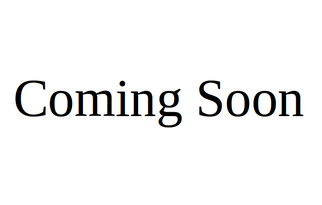

Jie Li
PhD student, Computer ScienceUniversity of Minnesota, Twin Cities
Email: lixx4611 at umn.edu
I'm a thrid year PhD student in the Department of Computer Science and Engineering at the University of Minnesota, Twin Cities, advised by Prof. Rahul Narain. My research interest focuses on physics based animation and computational optimization.
Publications

Jie Li, Gilles Daviet, Rahul Narain, Florence Bertails-Descoubes, Matthew Overby, George E. Brown, Laurence Boissieux.
"An Implicit Frictional Contact Solver for Adaptive Cloth Simulation".
Conditionally accepted to SIGGRAPH 2018.
"An Implicit Frictional Contact Solver for Adaptive Cloth Simulation".
Conditionally accepted to SIGGRAPH 2018.

Matthew Overby, George E. Brown, Jie Li, and Rahul Narain.
"ADMM ⊇ Projective Dynamics: Fast Simulation of Hyperelastic Models with Dynamic Constraints".
IEEE Transactions on Visualization and Computer Graphics, 2017.
"ADMM ⊇ Projective Dynamics: Fast Simulation of Hyperelastic Models with Dynamic Constraints".
IEEE Transactions on Visualization and Computer Graphics, 2017.